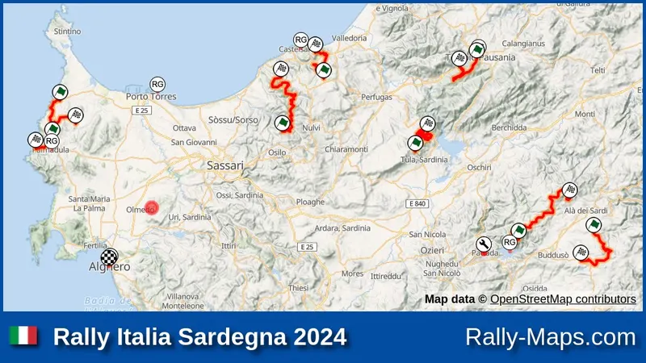
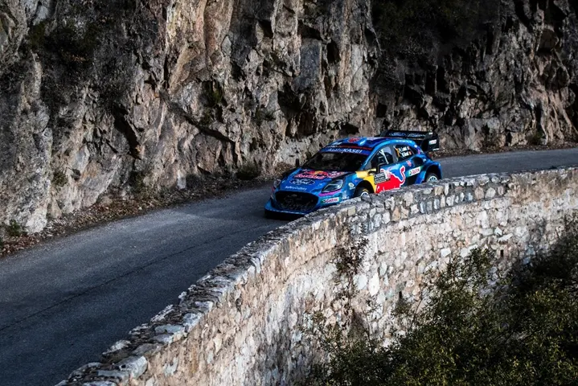
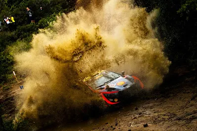
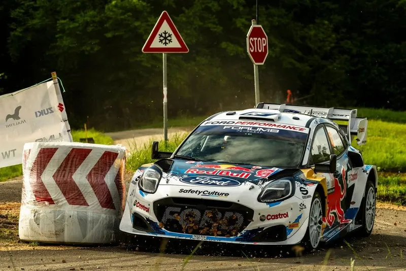
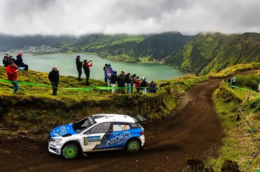
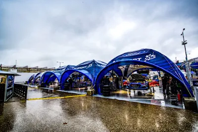
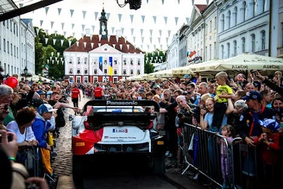
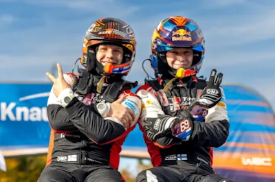

All the latest from the world of rallying and more!

Ford Returns to the WRC as a Manufacturer
For the first time since 2012, there will be a works Ford team in the World Rally Championship. The company has confirmed a factory return for the 2028 WRC season, with M-Sport set to run the programme, in a car adhearing to the WRC27 regulations in 2029.

WRC Driver Market: What are the teams planning for 2025
As the sun sets on the 2024 WRC season, teams are starting to prepare for 2025, and as a result, we have several driver market news and rumours. With Hyundai, Toyota, and M-Sport all looking to secure their drivers, there's a lot of buzz about who’s…

Should the Qualifying Stage return to the WRC?
Thierry Neuville's comments have sparked a debate on social media, with some fans expressing their desire for the Qualifying Stage's return.

Should Pre Event Testing change?
The way Pre Event Tests are held, is archaic and in a desperate need of a revamp. Dimitris weighs in on the hot topic, with ways to improve PETs.

My Rally Estonia Experience
Dimitris took a break from mapping Greek rallies to visit Zenor and Silver in Estonia!

Safari Rally Kenya - An Unfolding Disaster
The WRC flies to Africa for the third round of the 2024 season, for the famous Safari Rally in Kenya. This time next week, we will be waiting to see who will come out of Hell's Gate victorious, and what effect that will have on the championship's standings.

What's new for the WRC from 2025 and beyond
The World Motorsport Council has concluded, and some very important decisions have been taken for the future of the WRC and rallying as a whole.

Taking a look at what a potential 2025 WRC calendar will look like
This has to be the earliest we've ever had this many rumors about the upcoming season's calendar. In this post we will be examining every country vying for a slot in the WRC's upcoming calendar(s), and also taking a look at what rallies they'll be…

Let's take a closer look at the WRC's New Rally format for 2025
It was last Tuesday when I got a notification on my phone that Rally Sardegna's Rally Guide had come out. "Alright", I said, "can't be anything too crazy in there". But there was, checking the itinerary, I saw the total and it was only 266km! Huh?…

Analyzing the Drivers' Pace in this Season so far
Arguing about how fast a driver has been is a story as old as time. “No, Tanak is faster”, “Hell no, Kalle is way faster” etc etc etc. So I have been doing some numbers, and I am confident that I can tell you how fast all the drivers have b

Dimitris’ Driver Ratings - Rally Italia Sardegna
Dimitris’ Driver Ratings Rally Italia Sardegna Round 6 of the World Rally Championship gave us the most drama filled rally of the season so far with only 4 Rally1s in the Top 10 and torrential rain in all the 3 days of action making the con

An inside look on last weekend's FIA meeting
Rally Croatia was without a doubt, one of the best rallies of the season so far. The rally had 3 drivers going head to head for the overall win, with Sebastien Ogier emerging victorious after his foes, Thierry Neuville and Elfyn Evans, both

The new Face-Lifted FIA backed Rally Championship which makes it's return this weekend
There might be no rallies for the WRC and ERC this weekend, but that doesn’t mean that there aren’t any other events happening at this time. Firstly Rally Azores is on. The rally held in the middle of the Atlantic Ocean was dropped from the

What will M-Sport's lineup look like next year?
M-Sport are in a bit of a pickle for 2024. With Ott Tanak gone, M-Sport are going back to survival mode, not dissimilar to their situation in 2021 and 2022. M-Sport are not going to sign drivers like Mikkelsen, Lappi, Paddon etc etc, they’r

Why Rally Estonia's Absence from the 2024 Calendar Hurts Both the WRC and Estonian Motorsport
I have to admit, this post will come as a shock to people that know me, as I have been an outspoken critic of Rally Estonia, admittedly most of the time to annoy my Estonian colleagues. But when the news broke earlier this year that Rally E

Winners and Losers from Rally Central Europe
The first ever Central European Rally was certainly a rally to remember. It was the first ever WRC rally held in 3 different countries, and it was also the rally where the 2023 Drivers’ championship was decided, as Kalle Rovanpera finished